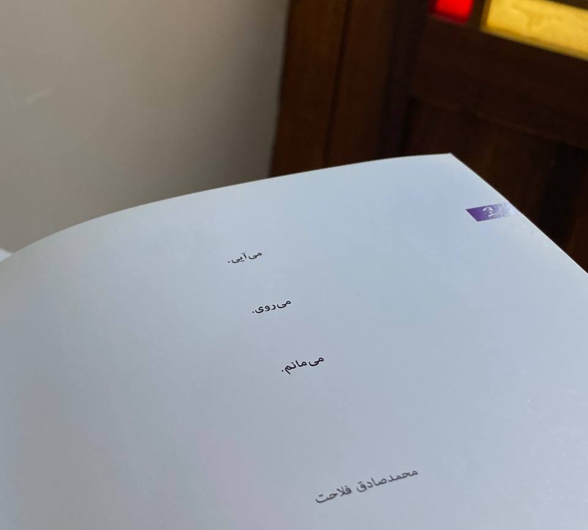

صفحه صد و پنج

نشستهام تو سالن مطالعه و دارم کتاب هایی که برق رفت و بابتش کارت دانشجویی گذاشتهام را ورق میزنم. هوای بیرون خیس و دلگیر است. اینکی نمیدانم چه کوفتی است و از کدام قفسه برداشتهام که ورق به ورق سیلی میزند و جلو میرود… یکهو رو صفحه صد و پنج نگاهم یخ میکند. مثل سربازی که تو خرابههای دشمن خوابش برده و وقتی بیدار شده، یکهو دیده جوخهاش رفته و جا مانده، تو وجودم غربت است که جزر و مد میکند… توی سالن هیچکس نیست. آنقدر هیچکس نیست که هایده گذاشتهام. برای کوچه غمگینم… برای خونه غمگینم… نگاهم از شیشه های رنگی رنگی میافتد توی گودال باغچه و مثل پسر بچهای بیقرار دنبال راهی برای فرار میگردد... دوباره چشم هایم میافتد رو تن کتابی که پیش رویم باز است. کاش کسی پشت کتاب نوشته بود: در گوشههای خلوت، روز های ابری، بدون همراه، و با هایده مصرف نشود!